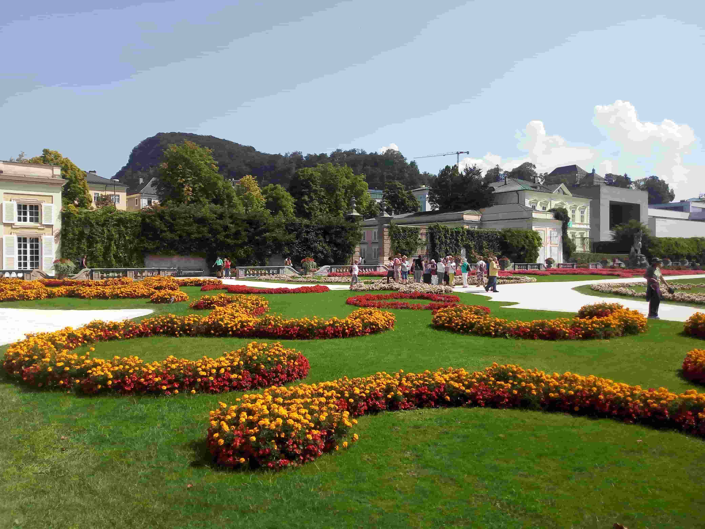

Mirabell Gardens
Salzburg, Austria
Mirabell Gardens is one of the most beautiful and historically significant landmarks in Salzburg, offering a remarkable example of European Baroque garden design. Originally created in the early seventeenth century, the gardens are admired for their carefully arranged flower beds, geometric pathways, elegant fountains, decorative sculptures, and beautifully maintained green spaces. Every part of the garden reflects a sense of symmetry and artistic detail, creating a peaceful atmosphere in the middle of the city. One of its most memorable features is the impressive perspective towards Hohensalzburg Fortress, which provides a striking backdrop to the landscaped grounds. The gardens are also closely connected to Salzburg's cultural heritage and are among the city's most recognizable public spaces. Walking through Mirabell Gardens offers an opportunity to appreciate both its historical character and seasonal beauty, from colorful floral displays to quiet corners surrounded by trees and sculptures. This collection brings together my personal travel photographs and memories, capturing the scenery, architectural details, and distinctive atmosphere of this special place in Salzburg.
My Photo Gallery
Explore my personal photographs of Mirabell Gardens.
View All Photos ↗